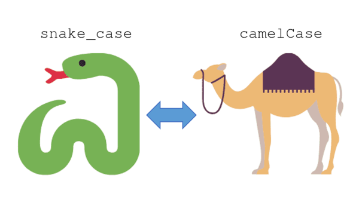

¿Qué es Snake Case?
Snake_case es una convención de nomenclatura en programación donde las palabras se escriben en minúsculas y se separan por guiones bajos (_), por ejemplo, nombre_variable. Se utiliza para mejorar la legibilidad del código
¿Para que sirve?
Legibilidad
Facilita la lectura de nombres compuestos, como nombre_usuario frente a nombreusuario.
Compatibilidad
Los lenguajes de programación no permiten espacios en los nombres de variables, funciones o archivos.
Standar
Muy usado en bases de datos (SQL) y en Python para variables, funciones y módulos.
Diferencia con camel case
La principal diferencia entre snake_case y camelCase es el método de separación de palabras: snake_case utiliza guiones bajos (_) y minúsculas, mientras que camelCase utiliza mayúsculas para separar cada palabra.
